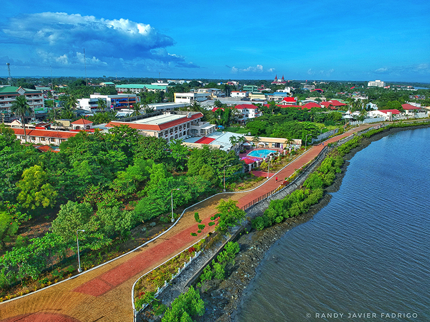
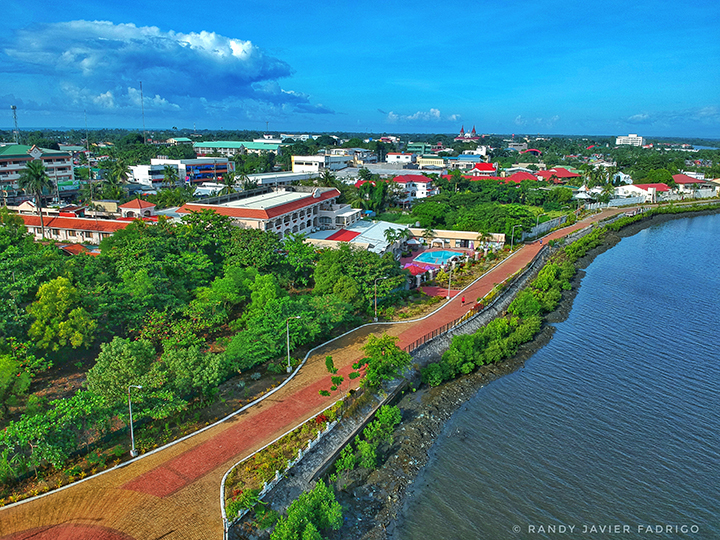

History
Iloilo City, in the Philippines, was founded in 1581 by Spanish conquistadors and became a vital trading port. It flourished under Spanish rule, showcasing colonial architecture and fostering the sugar industry. During the American period, it saw modernization. Despite WWII hardships, it emerged as an economic and cultural hub, preserving its heritage while embracing development. Today, Iloilo City remains a vibrant center for commerce, education, and tourism, reflecting its rich history and resilience.
Geography
Iloilo occupies the southeast portion of the Visayan island of Panay and is bordered by the province of Antique to the west, Capiz to the north, the Jintotolo Channel to the northeast, the Guimaras Strait to the east, and the Iloilo Strait and Panay Gulf to the southwest.
Demographics
The household population of Iloilo City in the 2015 Census was 444,486 broken down into 95,100 households or an average of 4.67 members per household.

Economy
Iloilo’s economy is one of the most competitive in the country and Iloilo City functions as a gateway to Western Visayas considering its strategic location and with modern infrastructures that make mobility efficient and accessible. The Western Visayas region attained 6.1 percent growth making it number 12 in the rank among the 17 regions in the Philippines. Its size puts Iloilo as the 5th largest economy outside of the National Capital Region. Iloilo’s economy is driven by Agriculture, Hunting, Forestry and Fishery (AHFF) and 2018 data have shown that AHFF contributed a total of 17.2 percent to regional output. The Industry’s share was 24.7 percent while the Services contributed 58.1 percent. Western Visayas, however, had a slower growth in all sectors: with agriculture even decelerating by 1.4 percent. The Industry Sector is almost the same – 8.7 in 2017 to 8.6 percent in 2018 – and the Service Sector likewise experienced a decrease from 8.5 percent to 7.5 percent.
Tourism
Our province is a popular tourist destination that offers a wide range of activities and attractions, including: ghtseeing in Iloilo is the best way to enjoy an island that is home to historical landmarks, quaint beaches and islands, heritage homes, and tasty and unique cuisine.
Attractions
Some of the top attractions in our province include: Miagao Church, Islas de Gigantes, Guimbal Church, Garin Farm, Iloilo River Esplanade.
 

Schools and Universities
Our province is home to several prestigious schools and universities: Certainly, here are the names of schools and universities in Iloilo City: University of San Agustin (USA) Central Philippine University (CPU) West Visayas State University (WVSU) Iloilo Science and Technology University (ISAT-U) St. Paul University Iloilo (SPUI) Filamer Christian University (FCU) Iloilo City Community College (ICCC) AMA Computer College Iloilo Iloilo Doctor's College (IDC) Colegio del Sagrado Corazon de Jesus (CSCJ)